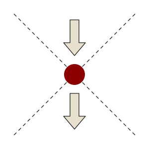

Crux Monographic History
About Us
About
Social media has fundamentally changed how we consume information. The result is a digital culture of endless scrolling; a feed of trivial, disposable content that rewards the superficial and punishes the substantive. Attention spans are shrinking, and depth is disappearing.
And yet, the appetite for something more meaningful has never been greater.
CRUX exists to answer that appetite. We are a monographic history platform built for people who want to understand not just what happened, but why: the structural forces, the decisive moments, and the long consequences that shape the world we live in today. The best stories ever told are found in history.
Purpose
History is not a sequence of trivial events. It is a structural matrix of cause, flashpoint, and consequence. Unfortunately, existing digital formats treat it as the former; reducing the most important events in human civilisation to gamified snippets, quick summaries, and shareable facts.
CRUX rejects that model entirely. Our purpose is to deliver intellectually serious, evidence-backed historical analysis in a format that respects both the subject matter and your intelligence: digestible enough to consume on a commute, yet substantial enough to change how you think.
Vision
Our vision is to deliver meaningful, digestible, and genuinely interesting content built specifically for busy professionals. We are re-writing history for the modern digital era.
Principles
Rigour Over Reach
CRUX will never gamify or reduce the most important events in history to something trivial. We are not trying to be the most popular app in the store. We are trying to be indispensable to the right audience. Depth is not a barrier to entry. It is the product.
Evidence-Based
Every analytical claim in a CRUX monograph is traceable to a verifiable source. Primary documents, peer-reviewed scholarship, and formal citations are not optional extras; they are the foundation. A claim without a source is an opinion. CRUX does not publish opinions.
Methodical Over Pace
We build carefully and deliberately. Speed is never prioritised over quality. The standard we set at the beginning is the standard we maintain.
The Interface Is the Argument
The way CRUX is navigated is not incidental to what it is arguing. It is the argument.
Every historical event has a crux: the decisive point at which forces in tension finally rupture. It is where the name comes from, and our interface reflects it directly. Every monograph is structured around three positions on the X-axis.

The intersection, the literal crux, is always the focal point. What came before explains why it was inevitable. What came after reveals what it actually meant. The interface does not allow a reader to skip to the conclusion without understanding the structure that produced it.
Contact
CRUX Monographic History is written, built and operated by Robert O'Sullivan. Write to feedback@cruxhistory.com.